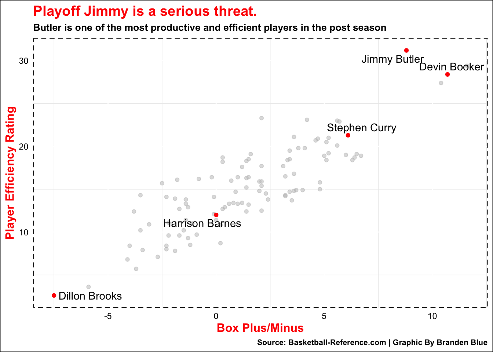

Code
library(tidyverse)
library(rvest)
library(ggrepel)
library(gt)Regsznstats <- read_csv("RegSeasonTeam.csv")
Playoff_TeamStats <- read_csv("PlayoffTeamStats.csv")
Clutch_playoff_TeamStats <- read_csv ("Clutch_Team_Shooting.csv") %>% select(Team, `EFG%`, `TS%`) %>% arrange(desc(`EFG%`))
playoff_players_advanced <- read_csv ("playoffplayers.csv") %>% filter(G >= 4, MP >= 100)
RegSzn_shooting <- Regsznstats %>%
arrange(`3P%`) %>%
top_n(-10,`3P%`)
RegMiami_Heat <- RegSzn_shooting %>%
filter(Team == "Miami Heat")
Playoff_TeamShooting <- Playoff_TeamStats %>%
arrange(desc(`3P%`)) %>%
top_n(10,`3P%`)
PlayoffMiami_Heat <- Playoff_TeamShooting %>%
filter(Team == "Miami Heat")
Jimmy <- playoff_players_advanced %>%
filter(Player == "Jimmy Butler")
Steph <- playoff_players_advanced %>%
filter(Player == "Stephen Curry")
Barnes <- playoff_players_advanced %>%
filter(Player == "Harrison Barnes")
Dev <- playoff_players_advanced %>%
filter(Player == "Devin Booker")
Clutch_Heat <- Clutch_playoff_TeamStats %>%
filter(Team == "Miami Heat")
Clutch_Bucks <- Clutch_playoff_TeamStats %>%
filter(Team == "Milwaukee Bucks")
Dill <- playoff_players_advanced %>%
filter(Player == "Dillon Brooks")At the end of the regular season, the Milwaukee Bucks had a league-best 58-24 record. The Bucks were one of the top defenses anchored by Defensive Player of the Year-candidate Brook Lopez and a former two-time MVP and DPOY in Giannis Antetokounmpo.
Khris Middleton was injured for much of last year’s playoffs and his floor-spacing next to Giannis was a pivotal part in the Bucks winning the championship a few years ago. Middleton was healthy and the gritty-backcourt duo of Grayson Allen and Jrue Holiday were ready to go.
It seemed the Bucks had another real chance to win the NBA Finals.
After the dust of the play-in games finally cleared, the Miami Heat were the eighth seed. If they wanted to make any sort of deep-run, they would have to play the role of David in a 2023 rematch against Goliath.
And they did it.They somehow toppled the Bucks.
How were they able to pull off a rare one versus eight seed matchup?
Now Giannis did get injured in game 1, which forced him to miss games 2 and 3. It was a 2-1 series when he came back, but the Bucks had real opportunities to regain control.
In the regular season the Miami Heat consistently struggled to make things shake offensively, especially behind the three-point line.
ggplot() +
geom_bar(data = RegSzn_shooting, aes(x = reorder(Team, `3P%`), weight = `3P%`)) +
geom_bar(data = RegMiami_Heat, aes(x = reorder(Team, `3P%`), weight = `3P%`, fill = `Team`)) +
geom_bar() +
coord_flip() +
labs(title = "Heat had one of the worst offenses in the league.",
subtitle = "Miami was among bottom five in three-point shooting during the regular season." , x="Team", y= "Three-point percentage",
caption = "Source: NBA.com | Graphic By Branden Blue") +
scale_fill_manual(values = c("Red")) +
scale_y_continuous(labels = scales::percent, limits = c()) +
theme_minimal() +
theme(
title = element_text(color = "Red", size = 12.5, face = 'bold'),
legend.position = "none",
plot.background = element_rect(fill = "white"),
plot.subtitle = element_text(color = "black", size = 9.5),
plot.caption = element_text(color = "black", size = 8),
panel.border = element_rect(linetype = "solid", fill = NA),
panel.grid.major = element_line(colour = "white"),
axis.text = element_text(color = "black"))They were among some of the worst shooting teams, so it comes as a big shock to see how their three-point shooting looked in the first round.
ggplot() +
geom_bar(data = Playoff_TeamShooting, aes(x = reorder(Team, `3P%`), weight = `3P%`)) +
geom_bar(data = PlayoffMiami_Heat, aes(x = reorder(Team, `3P%`), weight = `3P%`, fill = Team)) +
geom_bar() +
coord_flip() +
labs(title = "Heat's offense improved dramatically in postseason.",
subtitle = "Miami turned things around to become the best shooting teams in the playoffs." , x="Team", y= "Three-point percentage",
caption = "Source: NBA.com | Graphic By Branden Blue") +
scale_fill_manual(values = c("Red")) +
scale_y_continuous(labels = scales::percent, limits = c()) +
theme_minimal() +
theme(
title = element_text(color = "Red", size = 12.5, face = 'bold'),
legend.position = "none",
plot.background = element_rect(fill = "white"),
plot.subtitle = element_text(color = "black", size = 8.5),
plot.caption = element_text(color = "black", size = 8),
panel.border = element_rect(linetype = "solid", fill = NA),
panel.grid.major = element_line(colour = "white"),
axis.text = element_text(color = "black")) They led playoff teams in three-point percentage by quite a wide-margin. They did this without one of their best shooters in Tyler Herro, who had to miss the series with a broken hand.
Duncan Robinson got more minutes in the series due to Herro’s injury and shot 73.7% from three on 4 attempts a game. Guys like Max Strus, Gabe Vincent, and Kevin Love all stepped up their play from deep as well. Another player who contributed in a huge role was none other than Jimmy Butler, who averaged 37.6 points on 44 percent shooting from three.
Butler stepped up his performance significantly from the regular season and enhanced the lore surrounding “Playoff Jimmy”.
ggplot() +
geom_point(data = playoff_players_advanced, aes(x = BPM, y = PER), color = "grey", alpha= .5) +
geom_point(data = Jimmy, aes(x = BPM, y = PER), color = "red") +
geom_point(data = Steph, aes(x = BPM, y = PER), color = "red") +
geom_point(data = Barnes, aes(x = BPM, y = PER), color = "red") +
geom_point(data = Dill, aes(x = BPM, y = PER), color = "red") +
geom_point(data = Dev, aes(x = BPM, y = PER), color = "red") +
geom_text_repel( data = Jimmy, aes(x= BPM, y= PER , label=Player)) +
geom_text_repel( data = Steph, aes(x= BPM, y= PER , label=Player)) +
geom_text_repel( data = Barnes, aes(x= BPM, y= PER , label=Player)) +
geom_text_repel( data = Dev, aes(x= BPM, y= PER , label=Player)) +
geom_text_repel( data = Dill, aes(x= BPM, y= PER , label=Player)) +
geom_text(check_overlap = TRUE) +
labs(title = "Playoff Jimmy is a serious threat.",
subtitle = "Butler is one of the most productive and efficient players in the post season",
x = "Box Plus/Minus", y = "Player Efficiency Rating", caption = "Source: Basketball-Reference.com | Graphic By Branden Blue") +
theme_minimal() +
theme(
title = element_text(color = "Red", size = 12, face = 'bold'),
plot.background = element_rect(fill = "white"),
plot.subtitle = element_text(color = "black", size = 10),
plot.caption = element_text(color = "black", size = 8),
panel.border = element_rect(linetype = "dashed", fill = NA),
panel.grid.major = element_line(colour = "white"),
axis.text = element_text(color = "black")) 
Butler was by far one of the most dominant players in all of the postseason. In game 4, Jimmy had a 56-point performance which is tied for fourth all-time. Then he followed that up with a 42-point outing to put the final nail in Milwaukee’s coffin.
Even with Jimmy causing problems and Miami having a magnet attached to the net, the Bucks were still competitive for these games.
In some of these they even held sizable leads. In Game 4, Milwaukee had a 101-89 lead with 6:09 left to go in the game.
When the scoring margin is five-points or less with under five minutes to go, this is referred to as Clutch time. Anything that happens before this point does not matter, if you cannot close out the game.
Something the Bucks could not do.
Clutch_playoff_TeamStats %>%
gt() %>%
cols_label(
`EFG%` = "Clutch Effective Field Goal Percentage",
`TS%` = "Clutch True Shooting Percentage",
) %>%
tab_header(
title = "Closing out the game is key to a ring ",
subtitle = "Heat were one of the best teams in final minutes, while Bucks were one of the worst."
) %>% tab_style(
style = cell_text(color = "red", weight = "bold", align = "left"),
locations = cells_title("title")
) %>% tab_style(
style = cell_text(color = "black", align = "left"),
locations = cells_title("subtitle")
) %>% tab_source_note(
source_note = md( "NBA.com | Branden Blue")
) %>%
tab_style(
style = list(
cell_fill(color = "red"),
cell_text(color = "white")
),
locations = cells_body(
rows = Team == "Miami Heat")
) %>% tab_style(
style = list(
cell_fill(color = "#00471B"),
cell_text(color = "white")
),
locations = cells_body(
rows = Team == "Milwaukee Bucks")) %>%
tab_style(
locations = cells_column_labels(columns = everything()),
style = list(
cell_borders(sides = "bottom", weight = px(3)),
cell_text(weight = "bold", size=12) )) | Closing out the game is key to a ring | ||
| Heat were one of the best teams in final minutes, while Bucks were one of the worst. | ||
| Team | Clutch Effective Field Goal Percentage | Clutch True Shooting Percentage |
|---|---|---|
| Minnesota Timberwolves | 68.2 | 70.2 |
| New York Knicks | 66.7 | 70.9 |
| Philadelphia 76ers | 63.6 | 63.1 |
| Boston Celtics | 63.6 | 65.2 |
| Miami Heat | 63.5 | 70.0 |
| Los Angeles Lakers | 60.9 | 62.2 |
| Denver Nuggets | 58.3 | 63.9 |
| Cleveland Cavaliers | 57.1 | 63.5 |
| Golden State Warriors | 54.8 | 58.7 |
| Phoenix Suns | 53.6 | 58.3 |
| Sacramento Kings | 53.0 | 60.5 |
| Memphis Grizzlies | 44.4 | 48.1 |
| LA Clippers | 44.1 | 58.4 |
| Atlanta Hawks | 42.1 | 51.1 |
| Milwaukee Bucks | 42.1 | 48.5 |
| Brooklyn Nets | 25.0 | 28.2 |
| NBA.com | Branden Blue | ||
When the Heat become one of the best performing teams in the clutch and Milwaukee becomes the worst, it makes a 58-24 season disappear in a heartbeat.
The Heat finished just three games over .500 and have a legitimate chance to make it to the Eastern Conference Finals.
Mike Budenholzer was able to get out of the hot-seat after the Bucks won the championship in 2021, but he has since been fired. It seems the front office wants to retool with coaches like Nick Nurse out on the market.
The Heat are still in the race for a championship and “Playoff Jimmy” is seeking a ring to cap off his mythical run.